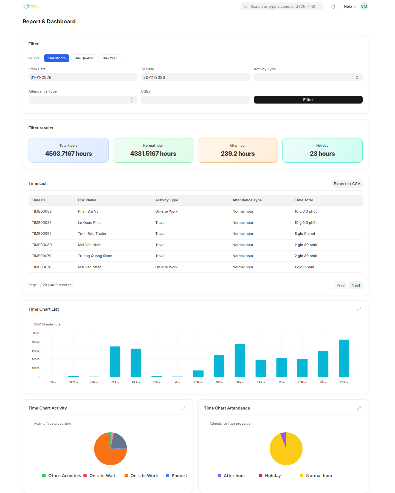
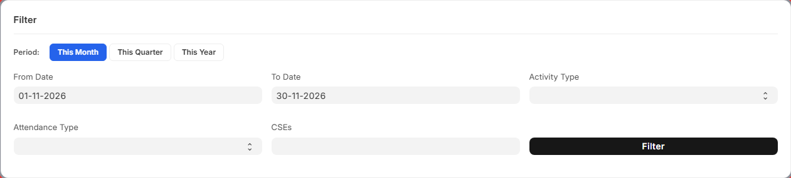
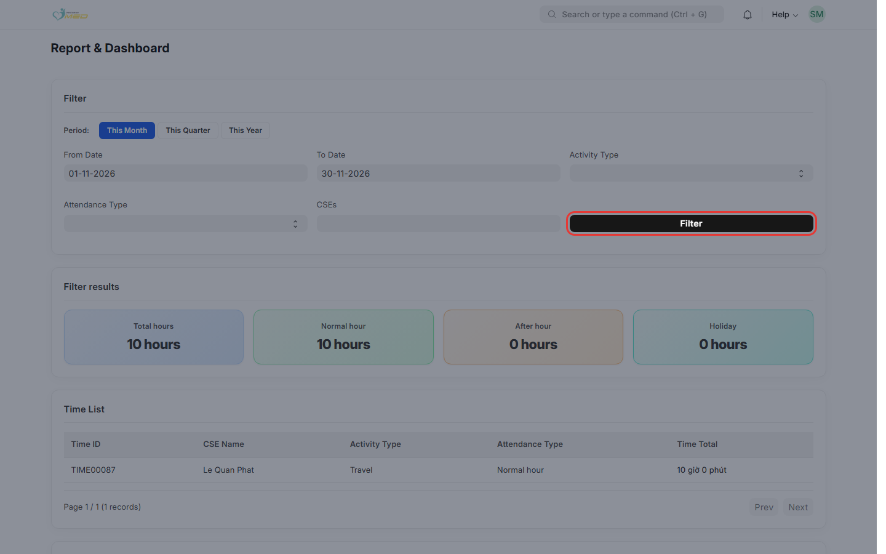
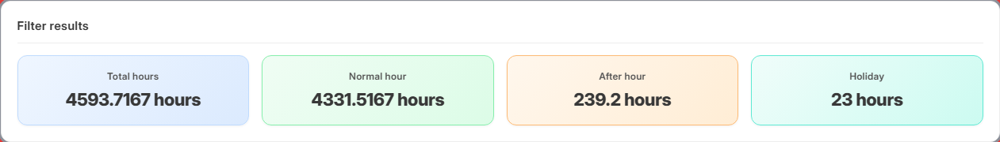
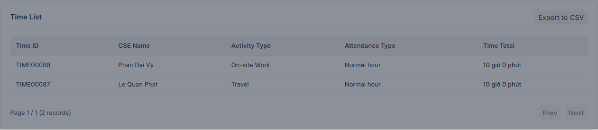
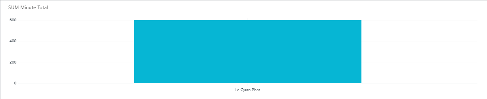
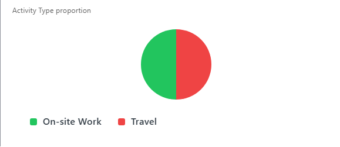
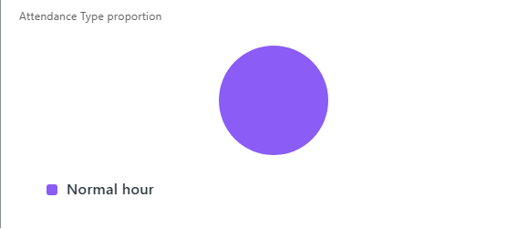

Mục đích
Service Time Report (tiêu đề trên màn hình: Report & Dashboard) giúp lãnh đạo dịch vụ theo dõi thời gian làm việc mà kỹ sư (CSE) ghi nhận trên các bản ghi Service Time: tổng giờ, phân loại theo giờ hành chính / ngoài giờ / ngày lễ, và phân bổ theo loại hoạt động.
Trang gồm: Filter, Filter results (bốn thẻ giờ), bảng Time List, và ba biểu đồ: Time Chart List, Time Chart Activity, Time Chart Attendance.
Khái niệm: Service Time và thời lượng
Mỗi dòng Service Time là một khoảng thời gian làm việc do CSE nhập (thường gắn với Service Job), với:
- Start / End — thời điểm bắt đầu và kết thúc;
- CSE Name — kỹ sư thực hiện;
- Activity Type — loại hoạt động (Travel, On-site Work, …);
- Attendance Type — loại giờ: Normal hour, After hour, Holiday.
Thời lượng = từ lúc Start đến lúc End. Nếu thiếu giờ hoặc giờ kết thúc sớm hơn giờ bắt đầu, dòng đó không được cộng vào báo cáo.
Báo cáo gom thành tổng giờ trên thẻ KPI; cột Time Total trên Time List hiển thị dễ đọc (ví dụ 2 giờ 30 phút).
Trước khi bắt đầu
- Đã đăng nhập ERP
- Vai trò iMED Service Leader hoặc iMED Service Manager
- Đã có bản ghi Service Time với Start/End hợp lệ trên hệ thống
Các bước thực hiện
Bước 1: Mở Service Time Report
Nhấn Ctrl + G, gõ Service Time Report rồi mở trang báo cáo (tiêu đề Report & Dashboard).

Bước 2: Thiết lập bộ lọc
Chọn nhanh This Month / This Quarter / This Year hoặc nhập From Date và To Date.

| Thành phần | Mô tả |
|---|---|
| Preset kỳ (ví dụ This Month) | Điền nhanh From Date và To Date. |
| From Date / To Date | Chỉ tính các dòng Service Time có giờ bắt đầu (Start) nằm trong khoảng ngày bạn chọn. |
| CSEs | Lọc theo một hoặc nhiều kỹ sư (CSE) ghi Service Time. |
| Activity Type | Travel, On-site Work, On-site Wait, Phone Support, Support, Office Activities, Workshop/Conference. |
| Attendance Type | Normal hour, After hour, Holiday. |
| Filter | Áp dụng lọc cho metrics, biểu đồ và Time List (về trang 1). |
Bước 3: Nhấn Filter

Bước 4: Đọc Filter results
Bốn thẻ: Total hours, Normal hour, After hour, Holiday.

Chi tiết từng chỉ số: mục Giải thích metrics.
Bước 5: Xem Time List
Bảng liệt kê từng bản ghi Service Time thỏa lọc, sắp xếp theo Start mới nhất trước.

- Dùng Prev / Next khi có hơn 50 bản ghi.
- Nhấn Time ID (nếu có link) để mở chi tiết bản ghi trên ERP.
Bước 6: Xem biểu đồ
Ba biểu đồ dùng cùng bộ lọc. Di chuột lên cột hoặc lát pie để xem tooltip (giờ + phút). Nút mở rộng góc phải mỗi thẻ → xem fullscreen.
Time Chart List — tổng thời gian theo từng CSE.

Time Chart Activity — tỷ lệ thời gian theo Activity Type.

Time Chart Attendance — tỷ lệ theo Normal / After / Holiday.

Giải thích chi tiết: Giải thích biểu đồ.
Giải thích metrics (Filter results)
Sau khi nhấn Filter, khối Filter results cho biết team đã dùng bao nhiêu giờ trong khoảng ngày và điều kiện bạn chọn. Chỉ các dòng Service Time khớp bộ lọc mới được cộng.
Mỗi dòng Service Time là một khoảng từ Start đến End. Dòng thiếu giờ hoặc giờ kết thúc trước giờ bắt đầu không được cộng. Tổng hiển thị bằng giờ (có thể là số lẻ, ví dụ 12.5 hours ≈ mười hai giờ rưỡi).
Kỳ lọc dựa vào thời điểm bắt đầu (Start) của từng dòng, không phải ngày kết thúc.
Từng chỉ số
Total hours (thẻ xanh)
Trả lời: “Toàn bộ kỹ sư đã ghi nhận bao nhiêu giờ làm việc?” Tổng mọi dòng thỏa lọc (mọi hoạt động, mọi loại giờ). Trên màn hình có thể ghi dạng X hours.
Normal hour (thẻ xanh lá)
Giờ gắn nhãn Normal hour — giờ hành chính theo quy ước công ty.
After hour (thẻ cam)
Giờ After hour — ngoài giờ hành chính (tăng ca, hỗ trợ buổi tối).
Holiday (thẻ xanh ngọc)
Giờ Holiday — làm việc vào ngày nghỉ / ngày lễ.
Filter results và bảng Time List
- Filter results = cộng tất cả dòng thỏa lọc thành bốn con số trên thẻ.
- Time List = liệt kê từng dòng (50 dòng/trang). Cộng cột Time Total của mọi trang sẽ khớp tổng giờ (trừ làm tròn hiển thị).
Activity Type — khi lọc hoặc đọc Time List
Metrics không tách từng loại hoạt động; xem qua biểu đồ Time Chart Activity hoặc lọc Activity Type. Ý nghĩa thường gặp:
| Activity Type | Hiểu đơn giản |
|---|---|
| Travel | Di chuyển đến / về site, sân bay, khách hàng |
| On-site Work | Làm việc trực tiếp tại cơ sở khách hàng |
| On-site Wait | Chờ tại site (chờ máy, chờ bệnh nhân, …) |
| Phone Support | Hỗ trợ qua điện thoại / từ xa |
| Support | Hỗ trợ kỹ thuật chung (không di chuyển / không on-site rõ ràng) |
| Office Activities | Công việc tại văn phòng liên quan dịch vụ |
| Workshop/Conference | Hội thảo, đào tạo nội bộ hoặc sự kiện |
Giải thích biểu đồ
Ba biểu đồ dùng cùng bộ lọc với Filter results và Time List. Rê chuột lên cột hoặc miếng bánh để xem chi tiết thời gian. Không có dữ liệu → No data for chart.
Time Chart List — cột theo kỹ sư (CSE)
Loại biểu đồ: cột đứng.
Ý nghĩa: So sánh ai làm nhiều giờ nhất trong tập đã lọc. Mỗi cột = tổng thời gian của một CSE Name.
Cách đọc: Cột cao = kỹ sư ghi nhiều giờ hơn trong kỳ. Nếu bạn lọc đúng một CSE, thường chỉ còn một cột.
Khi nào hữu ích: Cân bằng tải team, đối chiếu với kế hoạch nhân sự.
Time Chart Activity — tròn theo loại hoạt động
Loại biểu đồ: tròn (pie).
Ý nghĩa: Thời gian được dùng vào việc gì — đi lại, làm tại site, gọi điện, văn phòng, … Mỗi miếng = tổng giờ/phút của một Activity Type. Chỉ hiện loại có dữ liệu trong kỳ lọc.
Cách đọc: Miếng lớn = hoạt động chiếm nhiều thời gian nhất (ví dụ Travel cao → nhiều giờ trên đường).
Khi nào hữu ích: Tối ưu lịch, giảm giờ chờ hoặc di chuyển nếu chiếm tỷ lệ cao bất thường.
Time Chart Attendance — tròn Normal / After / Holiday
Loại biểu đồ: tròn (pie).
Ý nghĩa: Phân bổ giờ theo Attendance Type — hành chính, ngoài giờ, ngày lễ. Ba miếng cộng lại tương ứng Total hours và khớp ba thẻ Normal / After / Holiday trên Filter results.
Cách đọc: Miếng After Hour lớn → nhiều tăng ca hoặc hỗ trợ ngoài giờ trong kỳ.
Khi nào hữu ích: Làm báo cáo nhân sự, kiểm soát chi phí overtime và làm lễ.
Metrics và biểu đồ — đối chiếu nhanh
- Time Chart Attendance = hình ảnh của ba thẻ Normal / After / Holiday trên Filter results.
- Time Chart Activity = phân rã theo việc làm; không có dòng riêng trên metrics.
- Time Chart List = phân rê theo từng kỹ sư; không có dòng riêng trên metrics.
Phân quyền theo vai trò
| Vai trò | Truy cập Service Time Report |
|---|---|
| iMED Service Manager | Có |
| iMED Service Leader | Có |
| iMED Service User | Không |
| Administrator | Có |
Báo cáo số phiếu và hạng mục công việc: xem thêm Service Job Report. Quy trình ghi Ticket / Job / Time: Support — Ticket, Service Job, Service Time.
Kết quả mong đợi
Sau khi nhấn Filter:
- Filter results, Time List (trang 1) và ba biểu đồ đồng bộ một tập bản ghi.
- Time List: 50 dòng/trang, sắp xếp Start giảm dần.
- Không có dữ liệu: metrics = 0 Giờ; biểu đồ trống; bảng không có dòng.
Xử lý sự cố thường gặp
| Triệu chứng | Nguyên nhân có thể | Cách xử lý |
|---|---|---|
| Không mở được trang | Thiếu vai trò Leader/Manager | Liên hệ quản trị gán đúng vai trò |
| Tổng giờ = 0 nhưng có Service Time | Start/End trống hoặc End < Start; hoặc Start ngoài khoảng From/To | Sửa bản ghi; mở rộng From Date / To Date |
| Metrics không đổi | Chưa nhấn Filter | Nhấn Filter sau khi đổi ngày hoặc loại |
| Pie Attendance ≠ cộng tay Normal+After+Holiday | Làm tròn hiển thị giờ | Dùng tooltip phút trên biểu đồ hoặc xem Time List |
| Biểu đồ No data | Lọc quá hẹp | Bỏ Activity/Attendance/CSE hoặc nới ngày |
| Time List trống, metrics > 0 | Đang ở trang pagination sai | Nhấn Filter lại hoặc Prev về trang 1 |